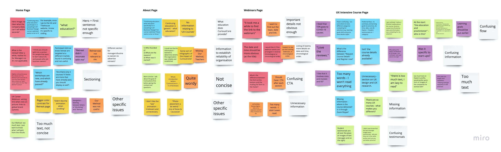
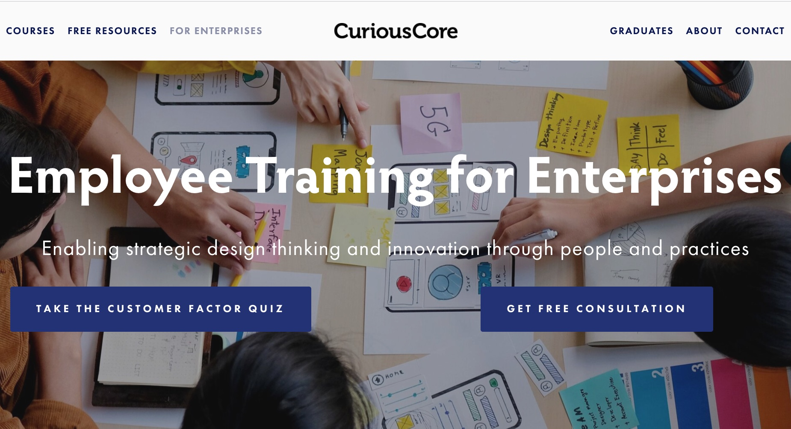
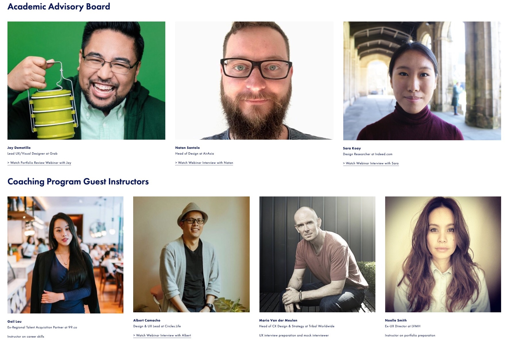
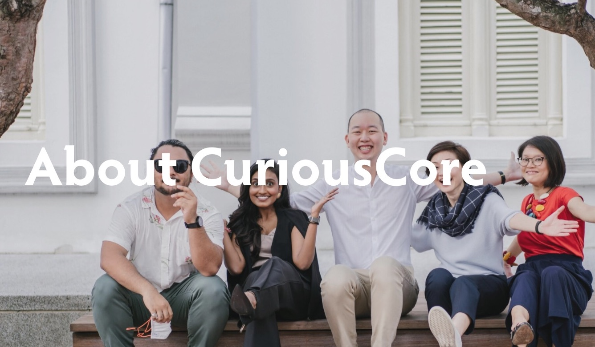
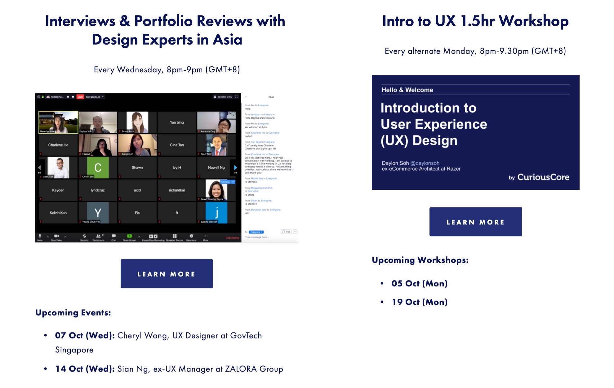
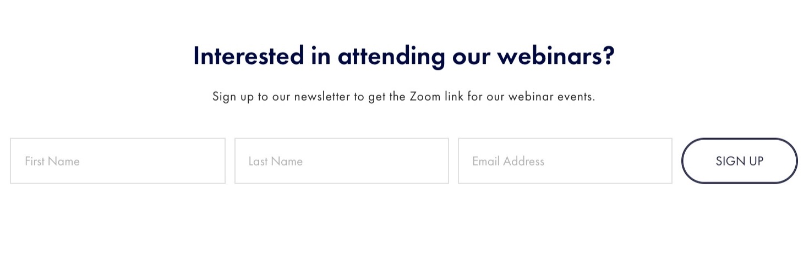

CuriousCore
Improving the user experience of an education start-up's website.
Role 👨🏻💻
Product Researcher
Team 👥
Individual
Location 📍
Singapore
Duration 🕒
2 months
(Jul-Aug'20)
Project 💻
Internship
Skills 🔧
User Research
Background
CuriousCore is an education startup that helps mid-career professionals break into the User Experience (UX) Design industry, and supports business leaders in learning about the fundamentals of Human-Centered Design (HCD).
The Problem
CuriousCore offers a variety of UX programs, including introductory and intensive courses that can be taken full-time or part-time.
In order to improve their courses, marketing and sales, CuriousCore wants to better understand their potential and current customers and improve the way information is displayed on their website.
The Goal
Understand the needs of CuriousCore customers and improve the user experience of the CuriousCore website.
My Role
As the Product Researcher, I worked independently to conduct user research and define usability problems, and collaborated with the founder to edit the content and design of the website.
1. Empathise
Competitive Analysis
Firstly, I conducted a competitor analysis of education companies - both in Singapore and around the world - that offer UX bootcamps and UX courses.
This competitor research provided us with a better understanding of the advantages and disadvantages of different UX programs and the strategies used to market these programmes, which helped to guide CuriousCore's marketing and content strategy.
Unfortunately, I cannot show the the competitive analysis results because it contains sensitive information.
Surveys
To learn about the problems that visitors are facing on the CuriousCore website, I added a pop-up questionnaire on the CuriousCore website (using Hotjar) and sent out a survey to CuriousCore's mailing list.
The survey (created using Google Forms) was also used as a screener to recruit particiapnts for user interviews.
User Interviews
To gain a deeper understanding of the issues encountered by visitors on the website, I conducted remote user interviews (using Zoom) with 6 prospective customers and 3 current customers.
During the interviews, participants provided information about their attributes, goals, and the challenges they faced when transitioning into the UX industry.
They were then asked to interact with the CuriousCore website while thinking aloud.
2. Define
Personas
I created three personas to capture the various profiles of potential CuriousCore customers.
Unfortunately, I cannot show the the personas because they contain sensitive information.
Affinity Mapping
I conducted affinity mapping (using Miro) to identify the main usability issues on each page of the website, including the "Home" page, the "About" page, a "Webinar" page (where CuriousCore advertises their weekly webinars) and a "Course" page (where CuriousCore advertises one of their UX courses).
Design Limitations
- Home Page:
- The company description was confusing - website visitors did not know that CuriousCore taught courses in User Experience (UX).
- There was information targeted at enterprises which was irrelevant and confusing to some visitors
- Website visitors could not find the links to CuriousCore's social media pages.
- About Page:
- Users were not able to understand what the company does from the About page.
- There was also a lack of information to establish the reliability of the organisation.
- The hero image was an irrelevant image of ocean waves.
- Webinar Page:
- Important information such as the date and time of upcoming webinars couldn't be found easily.
- Website visitors also did not know where or how to access the webinars.
- Course Page:
- There was a confusing structure with too much information competing for attention.
- There was too much text - many website visitors commented that they were "too lazy to read everything".
- The testimonials from previous students were placed in many different places and lacked credibility.
3. Ideate
Home Page
- The company description was edited to make it clear that CuriousCore was an educational platform that specialises in user experience and digital design.
- A separate page was created specifically "For Enterprises". 
- Links to CuriousCore's Facebook and LinkedIn pages were added to the footer.
About Page
- I added a specific description of what CuriousCore does as a company ("we specialise in helping mid-career professionals break into the UX Design industry".)
- To establish credibility, I added information about CuriousCore's founder, the CuriousCore team and their educators. 
- I replaced the irrelevant hero image with a photo of CuriousCore's founder with happy clients. 
Webinar Page
- An "overview" webinars page was created which shows the important information upfront. Visitors can navigate to a separate page to learn more. 
- A clear call-to-action was introduced to allow visitors to obtain the webinar link. 
Course Page
- I changed the structure a linear flow, rather than two columns of information competing for attention at once. The structure followed the order of what participants felt were the most important pieces of information.
- The amount of text was reduced, and more images and whitespace was added.
- Student testimonials were grouped together into a single section and the specific dates of when they took the course were added to increase their credibility.

Results
Outcome
The founder and product owner was pleased with the research deliverables, including the user research report, personas and competitive analysis.
My design recommendations were also immediately implemented on their website.
"Jingxiu has the gift of simplifying complex information and presenting data in a meaningful way to me as a business owner which was critical in helping me to understand our customers/prospects objectively."
Daylon Soh, Founder of CuriousCore (Product Owner)
Reflections
What went well 😄: In this project, I used research insights to drive design solutions. By basing my recommendations on evidence from the user research, I was able to come up with ideas that were effective at addressing real problems. In addition, by presenting the user research data to the stakeholder, I was able to justify the effectiveness of my design ideas and convince the stakeholder to implement my proposed solutions.
What could be improved 🤔: At early stages of the project, I proposed some ideas that were not feasible due to real-world constraints. For example, I initially proposed some design recommendations that were not implementable due to the constraints of the hosting platform (SquareSpace). Later in the project, rather than obsessing over pixel-perfect designs, I learnt to focus on more practical solutions such as changes to page structure and content.